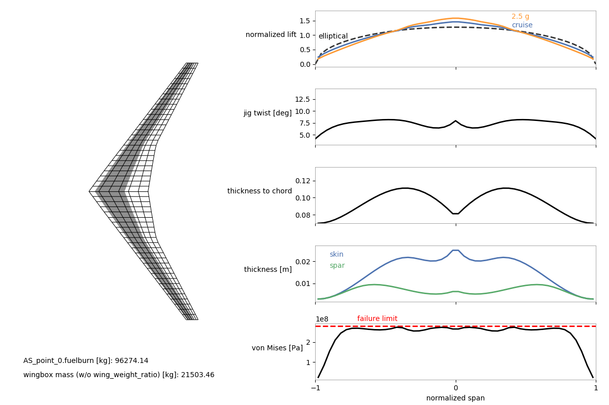

Aerostructural with Wingbox Walkthrough¶
In addition to the tubular-spar structural model available in OpenAeroStruct, you can use a wingbox-based model. This model is described in Chauhan and Martins’ paper here. We strongly recommend reading this relatively short conference paper to learn about the model and see some example results. The presentation slides for this conference paper can be found online. Analytic derivatives are not provided for some components of this model, so any optimization problem will use the complex-step approximation to obtain the relevant partial derivatives for these components.
This page breaks down and describes an example optimization run-script that uses the wingbox model. This example uses the same optimization problem used for the paper linked above, but with fewer design variables and a coarser mesh. The wing being optimized is based on the undeflected Common Research Model (uCRM), which is a long-range transport aircraft. A script to replicate the optimization problems described in the paper can be found in the examples directory (openaerostruct/examples/run_aerostruct_uCRM_multipoint.py). Please contact Shamsheer Chauhan (sschau@umich.edu) with any questions you have after reading the above paper and going through this example.
The goal of the wingbox model is to allow more realistic preliminary structural sizing for commuter to long-range transport-type aircraft which typically have wingbox structures. Since more realistic sizing is one of the goals of the wingbox model, this example also shows how to use it with a multipoint optimization. Wing structures are usually sized using loads that do not occur during normal cruise conditions, so we must consider at least one more flight point that provides more extreme loads.
This tutorial assumes that the reader has gone through the other examples and tutorials in the OpenAeroStruct documentation and is now familiar with how to set up problems and the terminology of OpenAeroStruct.
Let’s begin and look at the run-script now. First we import some modules.
import numpy as np
from openaerostruct.geometry.utils import generate_mesh
from openaerostruct.integration.aerostruct_groups import AerostructGeometry, AerostructPoint
from openmdao.api import IndepVarComp, Problem, ScipyOptimizeDriver, SqliteRecorder, ExecComp
from openaerostruct.structures.wingbox_fuel_vol_delta import WingboxFuelVolDelta
from openaerostruct.utils.constants import grav_constant
Next, we provide some airfoil coordinates. These coordinates are used to define the shape of the wingbox cross-section. In this example, we use the NASA SC2-0612 coordinates from airfoiltools.com. However, here we only provide the coordinates for the 10%- to 60%-chord portion of the airfoil because for this example we assume that it is this portion of the chord along the wing that will be structural and form the wingbox. Make sure that the first and last x-coordinates (chordwise) of the upper and lower curves are the same. Also make sure that the chord length of the original airfoil has been normalized to 1 (this is normally the case for the airfoil coordinates available on airfoiltools.com).
These coordinates will be scaled based on the effective chord and thickness-to-chord ratio for each wingbox segment along the wing. However, we currently have not implemented the functionality to specify different airfoil coordinates for different segments of the wing, so the same coordinates are used for the entire wing.
# Provide coordinates for a portion of an airfoil for the wingbox cross-section as an nparray with dtype=complex (to work with the complex-step approximation for derivatives).
# These should be for an airfoil with the chord scaled to 1.
# We use the 10% to 60% portion of the NASA SC2-0612 airfoil for this case
# We use the coordinates available from airfoiltools.com. Using such a large number of coordinates is not necessary.
# The first and last x-coordinates of the upper and lower surfaces must be the same
upper_x = np.array([0.1, 0.11, 0.12, 0.13, 0.14, 0.15, 0.16, 0.17, 0.18, 0.19, 0.2, 0.21, 0.22, 0.23, 0.24, 0.25, 0.26, 0.27, 0.28, 0.29, 0.3, 0.31, 0.32, 0.33, 0.34, 0.35, 0.36, 0.37, 0.38, 0.39, 0.4, 0.41, 0.42, 0.43, 0.44, 0.45, 0.46, 0.47, 0.48, 0.49, 0.5, 0.51, 0.52, 0.53, 0.54, 0.55, 0.56, 0.57, 0.58, 0.59, 0.6], dtype = 'complex128')
lower_x = np.array([0.1, 0.11, 0.12, 0.13, 0.14, 0.15, 0.16, 0.17, 0.18, 0.19, 0.2, 0.21, 0.22, 0.23, 0.24, 0.25, 0.26, 0.27, 0.28, 0.29, 0.3, 0.31, 0.32, 0.33, 0.34, 0.35, 0.36, 0.37, 0.38, 0.39, 0.4, 0.41, 0.42, 0.43, 0.44, 0.45, 0.46, 0.47, 0.48, 0.49, 0.5, 0.51, 0.52, 0.53, 0.54, 0.55, 0.56, 0.57, 0.58, 0.59, 0.6], dtype = 'complex128')
upper_y = np.array([ 0.0447, 0.046, 0.0472, 0.0484, 0.0495, 0.0505, 0.0514, 0.0523, 0.0531, 0.0538, 0.0545, 0.0551, 0.0557, 0.0563, 0.0568, 0.0573, 0.0577, 0.0581, 0.0585, 0.0588, 0.0591, 0.0593, 0.0595, 0.0597, 0.0599, 0.06, 0.0601, 0.0602, 0.0602, 0.0602, 0.0602, 0.0602, 0.0601, 0.06, 0.0599, 0.0598, 0.0596, 0.0594, 0.0592, 0.0589, 0.0586, 0.0583, 0.058, 0.0576, 0.0572, 0.0568, 0.0563, 0.0558, 0.0553, 0.0547, 0.0541], dtype = 'complex128')
lower_y = np.array([-0.0447, -0.046, -0.0473, -0.0485, -0.0496, -0.0506, -0.0515, -0.0524, -0.0532, -0.054, -0.0547, -0.0554, -0.056, -0.0565, -0.057, -0.0575, -0.0579, -0.0583, -0.0586, -0.0589, -0.0592, -0.0594, -0.0595, -0.0596, -0.0597, -0.0598, -0.0598, -0.0598, -0.0598, -0.0597, -0.0596, -0.0594, -0.0592, -0.0589, -0.0586, -0.0582, -0.0578, -0.0573, -0.0567, -0.0561, -0.0554, -0.0546, -0.0538, -0.0529, -0.0519, -0.0509, -0.0497, -0.0485, -0.0472, -0.0458, -0.0444], dtype = 'complex128')
Next, we create the dictionary with information for the mesh and create the mesh. For this example we use the uCRM-based geometry (undeflected Common Research Model) already defined and available in OpenAeroStruct. Alternatively, the user can provide their own mesh (see Aerostructural with wingbox (Q400) for another example with a custom mesh). Here we specify 15 as the number of spanwise nodes and 3 as the number of chordwise nodes for the VLM mesh. We also set chord_cos_spacing and span_cos_spacing to 0 for uniform panel spacing. The FEM model will use the spanwise spacing of the VLM mesh for the FEM mesh. We use a very coarse mesh for this example to keep the computational time low.
The generate_mesh function takes the inputs from the mesh dictionary and returns the mesh as well as values for the B-spline control points for the twist distribution (we specify the number of control points for this using num_twist_cp in the dictionary). Note that in this example we don’t end up using this twist distribution, but instead use a better starting twist distribution which will be seen later.
# Create a dictionary to store options about the surface
mesh_dict = {'num_y' : 15,
'num_x' : 3,
'wing_type' : 'uCRM_based',
'symmetry' : True,
'chord_cos_spacing' : 0,
'span_cos_spacing' : 0,
'num_twist_cp' : 4
}
mesh, twist_cp = generate_mesh(mesh_dict)
Next, we create a surface dictionary and provide necessary information for our lifting surface. After providing the relevant information for the name, symmetry, and S_ref_type settings, we provide the mesh and specify the string ‘wingbox’ for the fem_model_type (if we wanted the tubular structure, we would specify ‘tube’ instead). We also provide the airfoil coordinates for the wingbox cross-section here as the four arrays defined earlier.
surf_dict = {
# Wing definition
'name' : 'wing', # give the surface some name
'symmetry' : True, # if True, model only one half of the lifting surface
'S_ref_type' : 'projected', # how we compute the wing area,
# can be 'wetted' or 'projected'
'mesh' : mesh,
'fem_model_type' : 'wingbox', # 'wingbox' or 'tube'
'data_x_upper' : upper_x,
'data_x_lower' : lower_x,
'data_y_upper' : upper_y,
'data_y_lower' : lower_y,
Next, we provide some initial values for the wingbox spar and skin thickness distributions (B-spline control points), along with the wing twist distribution (note that these distributions do not need to have the same number of control points). For the wingbox model, to maintain simplicity, we use the same thickness variables for both the top and bottom wing skins. Similarly, we use the same thickness variables for the front and rear spars. Currently, we do not model buckling or have any buckling constraints. However, a comparison of optimized skin thicknesses with high-fidelity results shown in these slides, indicates that, assuming the wing has a reasonable rib spacing, this is not a very major concern.
We also provide a distribution for the thickness-to-chord ratio (B-spline control points for t_over_c_cp). The thickness-to-chord ratio design variable is important for the trade-off between aerodynamic (wave and viscous drag) benefits from a thin wing and structural benefits from a thick wing. The original_wingbox_airfoil_t_over_c is the thickness-to-chord ratio of the airfoil provided for the wingbox cross-section. For this example, the thickness-to-chord ratio of the SC2-0612 is 12%. This is used to scale the airfoil in the thickness direction as the thickness-to-chord ratio variable changes. Note that the thickness-to-chord ratio variable is the streamwise value. Using the sweep angle for the wingbox elements OpenAeroStruct computes the effective values for the wingbox cross-sections normal to the elements.
'twist_cp' : np.array([4., 5., 8., 9.]), # [deg]
'spar_thickness_cp' : np.array([0.004, 0.005, 0.008, 0.01]), # [m]
'skin_thickness_cp' : np.array([0.005, 0.01, 0.015, 0.025]), # [m]
't_over_c_cp' : np.array([0.08, 0.08, 0.10, 0.08]),
'original_wingbox_airfoil_t_over_c' : 0.12,
Next, we provide some information related to aerodynamics and specify some options. We set CDO to 0.0078 to account for the drag from the fuselage, tail surfaces, nacelles, and pylons (which are not being modeled). We set with_viscous to True to make OpenAeroStruct include an estimate for viscous drag (empirical equations) when computing the drag of the wing. We set with_wave to True to make OpenAeroStruct also include an estimate for wave drag using the empirical equations based on the Korn equation. This wave drag estimate needs a thickness-to-chord ratio value and a sweep angle value for the wing. This is computed internally by averaging the thickness-to-chord ratios and sweep angles across the span of the wing weighted by the widths of the corresponding VLM panels. Keep this in mind when creating wing meshes and setting up optimization problems using the wingbox model. The optimizer may try to take advantage of this averaging.
The k_lam value is the fraction of the chord assumed to have laminar flow, and is used for OpenAeroStruct’s viscous drag estimates (empirical equations). The c_max_t value is the location of the maximum thickness of the airfoil along the chord, and is also used for OpenAeroStruct’s viscous drag estimates.
# Aerodynamic deltas.
# These CL0 and CD0 values are added to the CL and CD
# obtained from aerodynamic analysis of the surface to get
# the total CL and CD.
# These CL0 and CD0 values do not vary wrt alpha.
# They can be used to account for things that are not included, such as contributions from the fuselage, camber, etc.
'CL0' : 0.0, # CL delta
'CD0' : 0.0078, # CD delta
'with_viscous' : True, # if true, compute viscous drag
'with_wave' : True, # if true, compute wave drag
# Airfoil properties for viscous drag calculation
'k_lam' : 0.05, # fraction of chord with laminar
# flow, used for viscous drag
'c_max_t' : .38, # chordwise location of maximum thickness
Next we provide some information related to structures. We provide the Young’s and shear moduli, as well as the allowable yield stress and density of the material being used (the wingbox model currently assumes that the material is isotropic). Here we use include a safety factor of 1.5 in the allowable yield stress. The strength_factor_for_upper_skin value can be used to adjust the yield strength of the upper skin relative to the lower skin. For example, if we were using different alloys for the top and bottom skin (e.g., Al7075 vs Al2024) we would provide the allowable yield stress of the lower skin for yield and the ratio of the yield strengths of the upper skin to the lower skin for strength_factor_for_upper_skin. The wing_weight_ratio number is used to estimate the weight of other components not modeled in the wingbox structure (e.g., overlaps, fasteners, etc.). With the exact_failure_constraint set to False, we aggregate the stress constraints for the FEM elements into a single constraint using the Kreisselmeier–Steinhauser function. This helps reduce computational cost during optimization by replacing a large number of constraints (one for each stress combination for each element) with a single constraint.
# Structural values are based on aluminum 7075
'E' : 73.1e9, # [Pa] Young's modulus
'G' : (73.1e9/2/1.33), # [Pa] shear modulus (calculated using E and the Poisson's ratio here)
'yield' : (420.e6 / 1.5), # [Pa] allowable yield stress
'mrho' : 2.78e3, # [kg/m^3] material density
'strength_factor_for_upper_skin' : 1.0, # the yield stress is multiplied by this factor for the upper skin
'wing_weight_ratio' : 1.25,
'exact_failure_constraint' : False, # if false, use KS function
The next two options struct_weight_relief and distributed_fuel_weight are used to specify whether the user wants the loads from the weight of the wingbox structure and the weight of the fuel to be distributed on the wing structure to provide load relief. The struct_weight_relief is for the loads from the weight of the structure (including the wing_weight_ratio factor). The distributed_fuel_weight is for the loads from the weight of the fuel, which is assumed to be distributed across the entire wing (the fraction of the total fuel that each wingbox segment, corresponding to each finite element, holds is equal to the ratio of its enclosed volume to the total enclosed volume of all the wingbox segments). We can also use the option n_point_masses if we want to add loads from point masses on to the wing structure (e.g., for engines). Here we set n_point_masses to 1 because we have one engine on each side of the aircraft (recall that we are using symmetry). If we did not want to add point masses, we would omit this option (do not set it to 0).
'struct_weight_relief' : True,
'distributed_fuel_weight' : True,
'n_point_masses' : 1, # number of point masses in the system; in this case, the engine (omit option if no point masses)
Next, we specify the density of the fuel (used to compute fuel volume from fuel mass) and also specify how much fuel we are carrying as reserves. This reserve fuel weight is added to the weight of the aircraft for performance calculations as well as computing the loads from the fuel on the wing when using the distributed_fuel_weight option. With these two final options, we are done with the surface dictionary and add it to a list called surfaces (here we only have one surface, but in general we might have multiple).
'fuel_density' : 803., # [kg/m^3] fuel density (only needed if the fuel-in-wing volume constraint is used)
'Wf_reserve' : 15000., # [kg] reserve fuel mass
}
surfaces = [surf_dict]
Next, we instantiate the OpenMDAO Problem and specify the independent variables. We will use some of these variables later as design variables and some simply as inputs. First we provide some inputs related to the flight conditions (Mach number, airspeed, Reynolds number per unit length, air density, and speed of sound). Since we want to consider two flight points in this example (a nominal cruise case and a 2.5g maneuver case), we provide two values for each input that is different for the two cases. For example, our cruise Mach number is 0.85 and our maneuver Mach number is 0.64.
# Create the problem and assign the model group
prob = Problem()
# Add problem information as an independent variables component
indep_var_comp = IndepVarComp()
indep_var_comp.add_output('Mach_number', val=np.array([0.85, 0.64]))
indep_var_comp.add_output('v', val=np.array([.85 * 295.07, .64 * 340.294]), units='m/s')
indep_var_comp.add_output('re',val=np.array([0.348*295.07*.85*1./(1.43*1e-5), \
1.225*340.294*.64*1./(1.81206*1e-5)]), units='1/m')
indep_var_comp.add_output('rho', val=np.array([0.348, 1.225]), units='kg/m**3')
indep_var_comp.add_output('speed_of_sound', val= np.array([295.07, 340.294]), units='m/s')
The following are some more independent variables. We have the thrust-specific fuel consumption, CT, cruise range, R, and the weight of the aircraft without the fuel required for the cruise point and without the weight of the wing structure and point masses, W0_without_point_masses. Since we are not interested in the fuel burn or range at the maneuver point, we only provide a single value for these inputs that will be used for the cruise fuel burn. Note that W0_without_point_masses includes the reserve fuel weight, which is why it is added here.
indep_var_comp.add_output('CT', val=0.53/3600, units='1/s')
indep_var_comp.add_output('R', val=14.307e6, units='m')
indep_var_comp.add_output('W0_without_point_masses', val=148000 + surf_dict['Wf_reserve'] - 10.e3, units='kg')
Next, we specify the load factor for each flight point (1g for cruise and 2.5g for the maneuver case). We also provide values for the angle of attack. In this case, instead of providing two values as an array for one variable, we add two separate variables with different names (alpha and alpha_maneuver). We create two variables just for convenience because, for this example, we allow the optimizer to trim the aircraft for the maneuver case using the angle of attack for that flight point (by making it a design variable), but keep the angle of attack fixed for the cruise case and make the optimizer trim the aircraft for the cruise flight point using the twist distribution. We also include the empty center of gravity location here as a reminder that we could use it later for studies in which we include tail surfaces and consider pitching moments (not done in this example).
indep_var_comp.add_output('load_factor', val=np.array([1., 2.5]))
indep_var_comp.add_output('alpha', val=0., units='deg')
indep_var_comp.add_output('alpha_maneuver', val=0., units='deg')
indep_var_comp.add_output('empty_cg', val=np.zeros((3)), units='m')
Finally, we also add the fuel mass as an independent variable to use it as a design variable. This may seem like a strange design variable to have, but we do this from an optimization architecture point of view. Instead of directly transferring the fuel burn value from the cruise point to the maneuver point (used to calculate MTOW for the maneuver point), we instead create a constraint (shown later) and make the optimizer ensure that the value being used for the fuel mass is the same value that is computed in the cruise point. This also allows the flexibility to later decide that you want to use a different value for the fuel mass for the maneuver case (or any other flight point you may have) that does not depend on the cruise point (or any other flight point you may have).
indep_var_comp.add_output('fuel_mass', val=10000., units='kg')
prob.model.add_subsystem('prob_vars',
indep_var_comp,
promotes=['*'])
Next, we include the engine mass magnitude and locations in the problem. OpenAeroStruct can handle any generic point masses add to the structural system. In this case, we’re adding the engine mass, which is set to 10,000 kg, to an appropriate location in front of the wing. The point_mass_locations coordinates are in the global frame. The loads caused by the point masses are transferred to the structural nodes based on the nodes’ proximity to the point masses (using an inverse-distance approach). We then compute the actual W0 value by summing the point_masses and W0_without_point_masses. Thus, the W0 value used in subsequent components includes the point masses, reserve fuel weight, and all weights of the aircraft except the wing structural mass and computed fuel burn. We add point_masses and point_mass_locations using indep_var_comp so that they can be changed during optimization (although they are not in this example).
point_masses = np.array([[10.e3]])
point_mass_locations = np.array([[25, -10., 0.]])
indep_var_comp.add_output('point_masses', val=point_masses, units='kg')
indep_var_comp.add_output('point_mass_locations', val=point_mass_locations, units='m')
# Compute the actual W0 to be used within OAS based on the sum of the point mass and other W0 weight
prob.model.add_subsystem('W0_comp',
ExecComp('W0 = W0_without_point_masses + sum(point_masses)', units='kg'),
promotes=['*'])
Next, we instantiate aerostructual groups for each surface (only one in this example) and add them to the model. We use a loop for generality but it is not necessary for this example because we only have one surface (just the wing).
# Loop over each surface in the surfaces list
for surface in surfaces:
# Get the surface name and create a group to contain components
# only for this surface
name = surface['name']
aerostruct_group = AerostructGeometry(surface=surface)
# Add groups to the problem with the name of the surface.
prob.model.add_subsystem(name, aerostruct_group)
Now we have to instantiate aerostructural flight points (one for cruise and one for the maneuver case in this example), add them to the model, and after that connect the inputs to the points.
# Loop through and add a certain number of aerostruct points
for i in range(2):
point_name = 'AS_point_{}'.format(i)
# Connect the parameters within the model for each aero point
# Create the aerostruct point group and add it to the model
AS_point = AerostructPoint(surfaces=surfaces, internally_connect_fuelburn=False)
prob.model.add_subsystem(point_name, AS_point)
Here we make connect the inputs to the flight points. For the inputs that have different values for each flight point, we also specify the src_indices to specify which one of the input values to use. In some connections you may notice slightly different naming. For example, for the air density we write ‘rho’, point_name + ‘.rho’, but for the fuel mass we write ‘fuel_mass’, point_name + ‘.total_perf.L_equals_W.fuelburn’. This has to do with how the variables belonging to different components and groups have been promoted (i.e., which level in the hierarchy they are available at). If you are unsure about where variables have been promoted to, while making connections on your own later, use OpenMDAO’s feature for visualizing the N2 diagram (commands shown later). Hovering over variables in this diagram should tell you what names to use for them.
# Connect flow properties to the analysis point
prob.model.connect('v', point_name + '.v', src_indices=[i])
prob.model.connect('Mach_number', point_name + '.Mach_number', src_indices=[i])
prob.model.connect('re', point_name + '.re', src_indices=[i])
prob.model.connect('rho', point_name + '.rho', src_indices=[i])
prob.model.connect('CT', point_name + '.CT')
prob.model.connect('R', point_name + '.R')
prob.model.connect('W0', point_name + '.W0')
prob.model.connect('speed_of_sound', point_name + '.speed_of_sound', src_indices=[i])
prob.model.connect('empty_cg', point_name + '.empty_cg')
prob.model.connect('load_factor', point_name + '.load_factor', src_indices=[i])
prob.model.connect('fuel_mass', point_name + '.total_perf.L_equals_W.fuelburn')
prob.model.connect('fuel_mass', point_name + '.total_perf.CG.fuelburn')
Now we have to make a few more internal connections that are not made automatically. Once again, if you are unsure about whether variables have been connected correctly, use OpenMDAO’s N2 diagram visualization feature (commands shown later). That diagram should show the connections, and the variables that have not been connected will be highlighted in red.
for surface in surfaces:
name = surface['name']
if surf_dict['distributed_fuel_weight']:
prob.model.connect('load_factor', point_name + '.coupled.load_factor', src_indices=[i])
com_name = point_name + '.' + name + '_perf.'
prob.model.connect(name + '.local_stiff_transformed', point_name + '.coupled.' + name + '.local_stiff_transformed')
prob.model.connect(name + '.nodes', point_name + '.coupled.' + name + '.nodes')
# Connect aerodyamic mesh to coupled group mesh
prob.model.connect(name + '.mesh', point_name + '.coupled.' + name + '.mesh')
if surf_dict['struct_weight_relief']:
prob.model.connect(name + '.element_mass', point_name + '.coupled.' + name + '.element_mass')
# Connect performance calculation variables
prob.model.connect(name + '.nodes', com_name + 'nodes')
prob.model.connect(name + '.cg_location', point_name + '.' + 'total_perf.' + name + '_cg_location')
prob.model.connect(name + '.structural_mass', point_name + '.' + 'total_perf.' + name + '_structural_mass')
# Connect wingbox properties to von Mises stress calcs
prob.model.connect(name + '.Qz', com_name + 'Qz')
prob.model.connect(name + '.J', com_name + 'J')
prob.model.connect(name + '.A_enc', com_name + 'A_enc')
prob.model.connect(name + '.htop', com_name + 'htop')
prob.model.connect(name + '.hbottom', com_name + 'hbottom')
prob.model.connect(name + '.hfront', com_name + 'hfront')
prob.model.connect(name + '.hrear', com_name + 'hrear')
prob.model.connect(name + '.spar_thickness', com_name + 'spar_thickness')
prob.model.connect(name + '.t_over_c', com_name + 't_over_c')
coupled_name = point_name + '.coupled.' + name
prob.model.connect('point_masses', coupled_name + '.point_masses')
prob.model.connect('point_mass_locations', coupled_name + '.point_mass_locations')
We have a couple more connections to make outside the loop because of the variable naming.
prob.model.connect('alpha', 'AS_point_0' + '.alpha')
prob.model.connect('alpha_maneuver', 'AS_point_1' + '.alpha')
For this example, we are also interested in adding a fuel-volume constraint that makes sure that the wingbox has enough internal volume to store the required fuel mass (estimated from the cruise flight point plus the reserve fuel). First we instantiate and add the component that computes the difference between the available internal volume and the required fuel volume (WingboxFuelVolDelta). Then we make some connections. We connect the fuel burn computed from the cruise condition to this component because we are interested in the fuel burn value from the cruise condition. We also have an if statement to make some more connections if we want the loads from the weight of the fuel to be applied to the FEM model.
# Here we add the fuel volume constraint componenet to the model
prob.model.add_subsystem('fuel_vol_delta', WingboxFuelVolDelta(surface=surface))
prob.model.connect('wing.struct_setup.fuel_vols', 'fuel_vol_delta.fuel_vols')
prob.model.connect('AS_point_0.fuelburn', 'fuel_vol_delta.fuelburn')
if surf_dict['distributed_fuel_weight']:
prob.model.connect('wing.struct_setup.fuel_vols', 'AS_point_0.coupled.wing.struct_states.fuel_vols')
prob.model.connect('fuel_mass', 'AS_point_0.coupled.wing.struct_states.fuel_mass')
prob.model.connect('wing.struct_setup.fuel_vols', 'AS_point_1.coupled.wing.struct_states.fuel_vols')
prob.model.connect('fuel_mass', 'AS_point_1.coupled.wing.struct_states.fuel_mass')
Next, we use OpenMDAO’s ExecComp feature (which can be used to quickly create simple components) to create a component that is used later for the constraint that ensures that the fuel mass value (used to compute the aircraft weight and fuel loads) is the same as the fuel burn mass computed from the cruise point (i.e., AS_point_0 here).
comp = ExecComp('fuel_diff = (fuel_mass - fuelburn) / fuelburn', units='kg')
prob.model.add_subsystem('fuel_diff', comp,
promotes_inputs=['fuel_mass'],
promotes_outputs=['fuel_diff'])
prob.model.connect('AS_point_0.fuelburn', 'fuel_diff.fuelburn')
Now it is time to specify the objective function and design variables. For this example, the objective function is the fuel burn computed using the cruise point (AS_point_0). The design variables are the control points for the twist, spar thickness, skin thickness, and thickness-to-chord ratio distributions. We add these design variables along with upper and lower bounds, and scalers. The scalers are used to scale the values of the design variables to help the optimizer converge better. Usually a scaler that brings the design variable to an order of magnitude around 1 is recommended. We also have a design variable for the maneuver angle of attack. In this example, the cruise angle of attack (which rotates the entire wing) is fixed at 0 and the optimizer uses the twist distribution to trim the aircraft for cruise. Then using this same twist distribution, the maneuver case is trimmed using the maneuver angle of attack design variable.
prob.model.add_objective('AS_point_0.fuelburn', scaler=1e-5)
prob.model.add_design_var('wing.twist_cp', lower=-15., upper=15., scaler=0.1)
prob.model.add_design_var('wing.spar_thickness_cp', lower=0.003, upper=0.1, scaler=1e2)
prob.model.add_design_var('wing.skin_thickness_cp', lower=0.003, upper=0.1, scaler=1e2)
prob.model.add_design_var('wing.geometry.t_over_c_cp', lower=0.07, upper=0.2, scaler=10.)
prob.model.add_design_var('alpha_maneuver', lower=-15., upper=15)
Next we add some constraints. For the cruise point, we specify a nominal coefficient of lift of 0.5.
prob.model.add_constraint('AS_point_0.CL', equals=0.5)
For the maneuver point, we use the following constraints to ensure that the lift equals the weight, and that the stresses in the structure do not exceed the specified allowable value.
prob.model.add_constraint('AS_point_1.L_equals_W', equals=0.)
prob.model.add_constraint('AS_point_1.wing_perf.failure', upper=0.)
For this example, we also add a constraint that ensures that the wingbox has enough internal volume for the fuel.
prob.model.add_constraint('fuel_vol_delta.fuel_vol_delta', lower=0.)
Now we add fuel_mass as a design variable and add the consistency constraint that ensures that the fuel mass value is the same as the fuel burn mass computed from the cruise point.
prob.model.add_design_var('fuel_mass', lower=0., upper=2e5, scaler=1e-5)
prob.model.add_constraint('fuel_diff', equals=0.)
Next, we specify an optimizer and its tolerance. Here we use the easily available SLSQP optimizer from SciPy and specify a very low tolerance to keep the computational cost very low for the purposes of this example. We recommend that the user experiments with tolerances and uses much tighter tolerances for their studies.
prob.driver = ScipyOptimizeDriver()
prob.driver.options['optimizer'] = 'SLSQP'
prob.driver.options['tol'] = 1e-2
We also include the following recorder settings so that OpenMDAO stores the optimization history in a database that can be used with the plot_wingbox.py visualization script in the utils sub-directory. It isn’t necessary to specify the long list of variables (prob.driver.recording_options[‘includes’]), and instead we could just use prob.driver.recording_options[‘includes’] = [‘*’] to include all variables. However, for finer meshes, the database becomes extremely large and the visualization script does not work due to memory requirements.
recorder = SqliteRecorder("aerostruct.db")
prob.driver.add_recorder(recorder)
# We could also just use prob.driver.recording_options['includes']=['*'] here, but for large meshes the database file becomes extremely large. So we just select the variables we need.
prob.driver.recording_options['includes'] = [
'alpha', 'rho', 'v', 'cg',
'AS_point_1.cg', 'AS_point_0.cg',
'AS_point_0.coupled.wing_loads.loads',
'AS_point_1.coupled.wing_loads.loads',
'AS_point_0.coupled.wing.normals',
'AS_point_1.coupled.wing.normals',
'AS_point_0.coupled.wing.widths',
'AS_point_1.coupled.wing.widths',
'AS_point_0.coupled.aero_states.wing_sec_forces',
'AS_point_1.coupled.aero_states.wing_sec_forces',
'AS_point_0.wing_perf.CL1',
'AS_point_1.wing_perf.CL1',
'AS_point_0.coupled.wing.S_ref',
'AS_point_1.coupled.wing.S_ref',
'wing.geometry.twist',
'wing.mesh',
'wing.skin_thickness',
'wing.spar_thickness',
'wing.t_over_c',
'wing.structural_mass',
'AS_point_0.wing_perf.vonmises',
'AS_point_1.wing_perf.vonmises',
'AS_point_0.coupled.wing.def_mesh',
'AS_point_1.coupled.wing.def_mesh',
]
prob.driver.recording_options['record_objectives'] = True
prob.driver.recording_options['record_constraints'] = True
prob.driver.recording_options['record_desvars'] = True
prob.driver.recording_options['record_inputs'] = True
Finally, we call the usual commands to setup and run the optimization problem. Notice that we also have some commands commented out. The view_model command can be used to generate a .html script that can be opened with a web browser to visualize the N2 problem structure. The check_partials command can be used to check partial derivatives when modifying or creating components.
# Set up the problem
prob.setup()
# from openmdao.api import view_model
# view_model(prob)
# prob.check_partials(form='central', compact_print=True)
prob.run_driver()
print('The fuel burn value is', prob['AS_point_0.fuelburn'][0], '[kg]')
print('The wingbox mass (excluding the wing_weight_ratio) is', prob['wing.structural_mass'][0]/surf_dict['wing_weight_ratio'], '[kg]')
Now we put the code together, run it, and see the output:
from __future__ import division, print_function
# Ignore the #docs checkpoint comments. They are just used to split up the code for the documentation webpage.
#docs checkpoint 0
import numpy as np
from openaerostruct.geometry.utils import generate_mesh
from openaerostruct.integration.aerostruct_groups import AerostructGeometry, AerostructPoint
from openmdao.api import IndepVarComp, Problem, ScipyOptimizeDriver, SqliteRecorder, ExecComp
from openaerostruct.structures.wingbox_fuel_vol_delta import WingboxFuelVolDelta
from openaerostruct.utils.constants import grav_constant
#docs checkpoint 1
# Provide coordinates for a portion of an airfoil for the wingbox cross-section as an nparray with dtype=complex (to work with the complex-step approximation for derivatives).
# These should be for an airfoil with the chord scaled to 1.
# We use the 10% to 60% portion of the NASA SC2-0612 airfoil for this case
# We use the coordinates available from airfoiltools.com. Using such a large number of coordinates is not necessary.
# The first and last x-coordinates of the upper and lower surfaces must be the same
upper_x = np.array([0.1, 0.11, 0.12, 0.13, 0.14, 0.15, 0.16, 0.17, 0.18, 0.19, 0.2, 0.21, 0.22, 0.23, 0.24, 0.25, 0.26, 0.27, 0.28, 0.29, 0.3, 0.31, 0.32, 0.33, 0.34, 0.35, 0.36, 0.37, 0.38, 0.39, 0.4, 0.41, 0.42, 0.43, 0.44, 0.45, 0.46, 0.47, 0.48, 0.49, 0.5, 0.51, 0.52, 0.53, 0.54, 0.55, 0.56, 0.57, 0.58, 0.59, 0.6], dtype = 'complex128')
lower_x = np.array([0.1, 0.11, 0.12, 0.13, 0.14, 0.15, 0.16, 0.17, 0.18, 0.19, 0.2, 0.21, 0.22, 0.23, 0.24, 0.25, 0.26, 0.27, 0.28, 0.29, 0.3, 0.31, 0.32, 0.33, 0.34, 0.35, 0.36, 0.37, 0.38, 0.39, 0.4, 0.41, 0.42, 0.43, 0.44, 0.45, 0.46, 0.47, 0.48, 0.49, 0.5, 0.51, 0.52, 0.53, 0.54, 0.55, 0.56, 0.57, 0.58, 0.59, 0.6], dtype = 'complex128')
upper_y = np.array([ 0.0447, 0.046, 0.0472, 0.0484, 0.0495, 0.0505, 0.0514, 0.0523, 0.0531, 0.0538, 0.0545, 0.0551, 0.0557, 0.0563, 0.0568, 0.0573, 0.0577, 0.0581, 0.0585, 0.0588, 0.0591, 0.0593, 0.0595, 0.0597, 0.0599, 0.06, 0.0601, 0.0602, 0.0602, 0.0602, 0.0602, 0.0602, 0.0601, 0.06, 0.0599, 0.0598, 0.0596, 0.0594, 0.0592, 0.0589, 0.0586, 0.0583, 0.058, 0.0576, 0.0572, 0.0568, 0.0563, 0.0558, 0.0553, 0.0547, 0.0541], dtype = 'complex128')
lower_y = np.array([-0.0447, -0.046, -0.0473, -0.0485, -0.0496, -0.0506, -0.0515, -0.0524, -0.0532, -0.054, -0.0547, -0.0554, -0.056, -0.0565, -0.057, -0.0575, -0.0579, -0.0583, -0.0586, -0.0589, -0.0592, -0.0594, -0.0595, -0.0596, -0.0597, -0.0598, -0.0598, -0.0598, -0.0598, -0.0597, -0.0596, -0.0594, -0.0592, -0.0589, -0.0586, -0.0582, -0.0578, -0.0573, -0.0567, -0.0561, -0.0554, -0.0546, -0.0538, -0.0529, -0.0519, -0.0509, -0.0497, -0.0485, -0.0472, -0.0458, -0.0444], dtype = 'complex128')
#docs checkpoint 2
# Create a dictionary to store options about the surface
mesh_dict = {'num_y' : 15,
'num_x' : 3,
'wing_type' : 'uCRM_based',
'symmetry' : True,
'chord_cos_spacing' : 0,
'span_cos_spacing' : 0,
'num_twist_cp' : 4
}
mesh, twist_cp = generate_mesh(mesh_dict)
#docs checkpoint 3
surf_dict = {
# Wing definition
'name' : 'wing', # give the surface some name
'symmetry' : True, # if True, model only one half of the lifting surface
'S_ref_type' : 'projected', # how we compute the wing area,
# can be 'wetted' or 'projected'
'mesh' : mesh,
'fem_model_type' : 'wingbox', # 'wingbox' or 'tube'
'data_x_upper' : upper_x,
'data_x_lower' : lower_x,
'data_y_upper' : upper_y,
'data_y_lower' : lower_y,
#docs checkpoint 4
'twist_cp' : np.array([4., 5., 8., 9.]), # [deg]
'spar_thickness_cp' : np.array([0.004, 0.005, 0.008, 0.01]), # [m]
'skin_thickness_cp' : np.array([0.005, 0.01, 0.015, 0.025]), # [m]
't_over_c_cp' : np.array([0.08, 0.08, 0.10, 0.08]),
'original_wingbox_airfoil_t_over_c' : 0.12,
#docs checkpoint 5
# Aerodynamic deltas.
# These CL0 and CD0 values are added to the CL and CD
# obtained from aerodynamic analysis of the surface to get
# the total CL and CD.
# These CL0 and CD0 values do not vary wrt alpha.
# They can be used to account for things that are not included, such as contributions from the fuselage, camber, etc.
'CL0' : 0.0, # CL delta
'CD0' : 0.0078, # CD delta
'with_viscous' : True, # if true, compute viscous drag
'with_wave' : True, # if true, compute wave drag
# Airfoil properties for viscous drag calculation
'k_lam' : 0.05, # fraction of chord with laminar
# flow, used for viscous drag
'c_max_t' : .38, # chordwise location of maximum thickness
#docs checkpoint 6
# Structural values are based on aluminum 7075
'E' : 73.1e9, # [Pa] Young's modulus
'G' : (73.1e9/2/1.33), # [Pa] shear modulus (calculated using E and the Poisson's ratio here)
'yield' : (420.e6 / 1.5), # [Pa] allowable yield stress
'mrho' : 2.78e3, # [kg/m^3] material density
'strength_factor_for_upper_skin' : 1.0, # the yield stress is multiplied by this factor for the upper skin
'wing_weight_ratio' : 1.25,
'exact_failure_constraint' : False, # if false, use KS function
#docs checkpoint 7
'struct_weight_relief' : True,
'distributed_fuel_weight' : True,
'n_point_masses' : 1, # number of point masses in the system; in this case, the engine (omit option if no point masses)
#docs checkpoint 8
'fuel_density' : 803., # [kg/m^3] fuel density (only needed if the fuel-in-wing volume constraint is used)
'Wf_reserve' : 15000., # [kg] reserve fuel mass
}
surfaces = [surf_dict]
#docs checkpoint 9
# Create the problem and assign the model group
prob = Problem()
# Add problem information as an independent variables component
indep_var_comp = IndepVarComp()
indep_var_comp.add_output('Mach_number', val=np.array([0.85, 0.64]))
indep_var_comp.add_output('v', val=np.array([.85 * 295.07, .64 * 340.294]), units='m/s')
indep_var_comp.add_output('re',val=np.array([0.348*295.07*.85*1./(1.43*1e-5), \
1.225*340.294*.64*1./(1.81206*1e-5)]), units='1/m')
indep_var_comp.add_output('rho', val=np.array([0.348, 1.225]), units='kg/m**3')
indep_var_comp.add_output('speed_of_sound', val= np.array([295.07, 340.294]), units='m/s')
#docs checkpoint 10
indep_var_comp.add_output('CT', val=0.53/3600, units='1/s')
indep_var_comp.add_output('R', val=14.307e6, units='m')
indep_var_comp.add_output('W0_without_point_masses', val=148000 + surf_dict['Wf_reserve'] - 10.e3, units='kg')
#docs checkpoint 11
indep_var_comp.add_output('load_factor', val=np.array([1., 2.5]))
indep_var_comp.add_output('alpha', val=0., units='deg')
indep_var_comp.add_output('alpha_maneuver', val=0., units='deg')
indep_var_comp.add_output('empty_cg', val=np.zeros((3)), units='m')
#docs checkpoint 12
indep_var_comp.add_output('fuel_mass', val=10000., units='kg')
prob.model.add_subsystem('prob_vars',
indep_var_comp,
promotes=['*'])
#docs checkpoint 12.5
point_masses = np.array([[10.e3]])
point_mass_locations = np.array([[25, -10., 0.]])
indep_var_comp.add_output('point_masses', val=point_masses, units='kg')
indep_var_comp.add_output('point_mass_locations', val=point_mass_locations, units='m')
# Compute the actual W0 to be used within OAS based on the sum of the point mass and other W0 weight
prob.model.add_subsystem('W0_comp',
ExecComp('W0 = W0_without_point_masses + sum(point_masses)', units='kg'),
promotes=['*'])
#docs checkpoint 13
# Loop over each surface in the surfaces list
for surface in surfaces:
# Get the surface name and create a group to contain components
# only for this surface
name = surface['name']
aerostruct_group = AerostructGeometry(surface=surface)
# Add groups to the problem with the name of the surface.
prob.model.add_subsystem(name, aerostruct_group)
#docs checkpoint 14
# Loop through and add a certain number of aerostruct points
for i in range(2):
point_name = 'AS_point_{}'.format(i)
# Connect the parameters within the model for each aero point
# Create the aerostruct point group and add it to the model
AS_point = AerostructPoint(surfaces=surfaces, internally_connect_fuelburn=False)
prob.model.add_subsystem(point_name, AS_point)
#docs checkpoint 15
# Connect flow properties to the analysis point
prob.model.connect('v', point_name + '.v', src_indices=[i])
prob.model.connect('Mach_number', point_name + '.Mach_number', src_indices=[i])
prob.model.connect('re', point_name + '.re', src_indices=[i])
prob.model.connect('rho', point_name + '.rho', src_indices=[i])
prob.model.connect('CT', point_name + '.CT')
prob.model.connect('R', point_name + '.R')
prob.model.connect('W0', point_name + '.W0')
prob.model.connect('speed_of_sound', point_name + '.speed_of_sound', src_indices=[i])
prob.model.connect('empty_cg', point_name + '.empty_cg')
prob.model.connect('load_factor', point_name + '.load_factor', src_indices=[i])
prob.model.connect('fuel_mass', point_name + '.total_perf.L_equals_W.fuelburn')
prob.model.connect('fuel_mass', point_name + '.total_perf.CG.fuelburn')
#docs checkpoint 16
for surface in surfaces:
name = surface['name']
if surf_dict['distributed_fuel_weight']:
prob.model.connect('load_factor', point_name + '.coupled.load_factor', src_indices=[i])
com_name = point_name + '.' + name + '_perf.'
prob.model.connect(name + '.local_stiff_transformed', point_name + '.coupled.' + name + '.local_stiff_transformed')
prob.model.connect(name + '.nodes', point_name + '.coupled.' + name + '.nodes')
# Connect aerodyamic mesh to coupled group mesh
prob.model.connect(name + '.mesh', point_name + '.coupled.' + name + '.mesh')
if surf_dict['struct_weight_relief']:
prob.model.connect(name + '.element_mass', point_name + '.coupled.' + name + '.element_mass')
# Connect performance calculation variables
prob.model.connect(name + '.nodes', com_name + 'nodes')
prob.model.connect(name + '.cg_location', point_name + '.' + 'total_perf.' + name + '_cg_location')
prob.model.connect(name + '.structural_mass', point_name + '.' + 'total_perf.' + name + '_structural_mass')
# Connect wingbox properties to von Mises stress calcs
prob.model.connect(name + '.Qz', com_name + 'Qz')
prob.model.connect(name + '.J', com_name + 'J')
prob.model.connect(name + '.A_enc', com_name + 'A_enc')
prob.model.connect(name + '.htop', com_name + 'htop')
prob.model.connect(name + '.hbottom', com_name + 'hbottom')
prob.model.connect(name + '.hfront', com_name + 'hfront')
prob.model.connect(name + '.hrear', com_name + 'hrear')
prob.model.connect(name + '.spar_thickness', com_name + 'spar_thickness')
prob.model.connect(name + '.t_over_c', com_name + 't_over_c')
coupled_name = point_name + '.coupled.' + name
prob.model.connect('point_masses', coupled_name + '.point_masses')
prob.model.connect('point_mass_locations', coupled_name + '.point_mass_locations')
#docs checkpoint 17
prob.model.connect('alpha', 'AS_point_0' + '.alpha')
prob.model.connect('alpha_maneuver', 'AS_point_1' + '.alpha')
#docs checkpoint 18
# Here we add the fuel volume constraint componenet to the model
prob.model.add_subsystem('fuel_vol_delta', WingboxFuelVolDelta(surface=surface))
prob.model.connect('wing.struct_setup.fuel_vols', 'fuel_vol_delta.fuel_vols')
prob.model.connect('AS_point_0.fuelburn', 'fuel_vol_delta.fuelburn')
if surf_dict['distributed_fuel_weight']:
prob.model.connect('wing.struct_setup.fuel_vols', 'AS_point_0.coupled.wing.struct_states.fuel_vols')
prob.model.connect('fuel_mass', 'AS_point_0.coupled.wing.struct_states.fuel_mass')
prob.model.connect('wing.struct_setup.fuel_vols', 'AS_point_1.coupled.wing.struct_states.fuel_vols')
prob.model.connect('fuel_mass', 'AS_point_1.coupled.wing.struct_states.fuel_mass')
#docs checkpoint 19
comp = ExecComp('fuel_diff = (fuel_mass - fuelburn) / fuelburn', units='kg')
prob.model.add_subsystem('fuel_diff', comp,
promotes_inputs=['fuel_mass'],
promotes_outputs=['fuel_diff'])
prob.model.connect('AS_point_0.fuelburn', 'fuel_diff.fuelburn')
#docs checkpoint 20
prob.model.add_objective('AS_point_0.fuelburn', scaler=1e-5)
prob.model.add_design_var('wing.twist_cp', lower=-15., upper=15., scaler=0.1)
prob.model.add_design_var('wing.spar_thickness_cp', lower=0.003, upper=0.1, scaler=1e2)
prob.model.add_design_var('wing.skin_thickness_cp', lower=0.003, upper=0.1, scaler=1e2)
prob.model.add_design_var('wing.geometry.t_over_c_cp', lower=0.07, upper=0.2, scaler=10.)
prob.model.add_design_var('alpha_maneuver', lower=-15., upper=15)
#docs checkpoint 21
prob.model.add_constraint('AS_point_0.CL', equals=0.5)
#docs checkpoint 22
prob.model.add_constraint('AS_point_1.L_equals_W', equals=0.)
prob.model.add_constraint('AS_point_1.wing_perf.failure', upper=0.)
#docs checkpoint 23
prob.model.add_constraint('fuel_vol_delta.fuel_vol_delta', lower=0.)
#docs checkpoint 24
prob.model.add_design_var('fuel_mass', lower=0., upper=2e5, scaler=1e-5)
prob.model.add_constraint('fuel_diff', equals=0.)
#docs checkpoint 25
prob.driver = ScipyOptimizeDriver()
prob.driver.options['optimizer'] = 'SLSQP'
prob.driver.options['tol'] = 1e-2
#docs checkpoint 26
recorder = SqliteRecorder("aerostruct.db")
prob.driver.add_recorder(recorder)
# We could also just use prob.driver.recording_options['includes']=['*'] here, but for large meshes the database file becomes extremely large. So we just select the variables we need.
prob.driver.recording_options['includes'] = [
'alpha', 'rho', 'v', 'cg',
'AS_point_1.cg', 'AS_point_0.cg',
'AS_point_0.coupled.wing_loads.loads',
'AS_point_1.coupled.wing_loads.loads',
'AS_point_0.coupled.wing.normals',
'AS_point_1.coupled.wing.normals',
'AS_point_0.coupled.wing.widths',
'AS_point_1.coupled.wing.widths',
'AS_point_0.coupled.aero_states.wing_sec_forces',
'AS_point_1.coupled.aero_states.wing_sec_forces',
'AS_point_0.wing_perf.CL1',
'AS_point_1.wing_perf.CL1',
'AS_point_0.coupled.wing.S_ref',
'AS_point_1.coupled.wing.S_ref',
'wing.geometry.twist',
'wing.mesh',
'wing.skin_thickness',
'wing.spar_thickness',
'wing.t_over_c',
'wing.structural_mass',
'AS_point_0.wing_perf.vonmises',
'AS_point_1.wing_perf.vonmises',
'AS_point_0.coupled.wing.def_mesh',
'AS_point_1.coupled.wing.def_mesh',
]
prob.driver.recording_options['record_objectives'] = True
prob.driver.recording_options['record_constraints'] = True
prob.driver.recording_options['record_desvars'] = True
prob.driver.recording_options['record_inputs'] = True
#docs checkpoint 27
# Set up the problem
prob.setup()
/home/travis/build/mdolab/OpenAeroStruct/openaerostruct/structures/compute_nodes.py:53: ComplexWarning: Casting complex values to real discards the imaginary part data[:n] = 1 - w /home/travis/build/mdolab/OpenAeroStruct/openaerostruct/structures/compute_nodes.py:54: ComplexWarning: Casting complex values to real discards the imaginary part data[n:] = w /home/travis/miniconda/lib/python3.6/site-packages/openmdao/utils/general_utils.py:218: ComplexWarning: Casting complex values to real discards the imaginary part value = np.atleast_1d(value).astype(np.float64) /home/travis/build/mdolab/OpenAeroStruct/openaerostruct/transfer/load_transfer.py:57: ComplexWarning: Casting complex values to real discards the imaginary part self.fem_origin = np.float(fem_origin)
# from openmdao.api import view_model
# view_model(prob)
# prob.check_partials(form='central', compact_print=True)
prob.run_driver()
/home/travis/miniconda/lib/python3.6/site-packages/openmdao/solvers/solver.py:324: DeprecationWarning:The 'err_on_maxiter' option provides backwards compatibility with earlier version of OpenMDAO; use options['err_on_non_converge'] instead.
/home/travis/miniconda/lib/python3.6/site-packages/openmdao/solvers/solver.py:324: DeprecationWarning:The 'err_on_maxiter' option provides backwards compatibility with earlier version of OpenMDAO; use options['err_on_non_converge'] instead.
/home/travis/build/mdolab/OpenAeroStruct/openaerostruct/structures/wingbox_geometry.py:82: ComplexWarning: Casting complex values to real discards the imaginary part
fem_chords[ielem] = fem_chords[ielem] * cos_theta_fe_sweep
/home/travis/miniconda/lib/python3.6/site-packages/openmdao/vectors/vector.py:335: ComplexWarning: Casting complex values to real discards the imaginary part
self._views[abs_name][slc] = value
==================
AS_point_0.coupled
==================
NL: NLBGS 0 ; 1602734.23 1
NL: NLBGS 1 ; 971229.594 0.605982936
NL: NLBGS 2 ; 224537.188 0.140096333
NL: NLBGS 3 ; 82665.8443 0.0515780113
NL: NLBGS 4 ; 3089.49723 0.00192764163
NL: NLBGS 5 ; 1211.59035 0.000755952125
NL: NLBGS 6 ; 361.436612 0.000225512506
NL: NLBGS 7 ; 95.2085857 5.94038512e-05
NL: NLBGS 8 ; 29.9159982 1.86656013e-05
NL: NLBGS 9 ; 6.6086297 4.1233472e-06
NL: NLBGS 10 ; 2.09143073 1.30491425e-06
NL: NLBGS 11 ; 0.445046336 2.77679436e-07
NL: NLBGS 12 ; 0.141808577 8.84791592e-08
NL: NLBGS 13 ; 0.0293644837 1.83214928e-08
NL: NLBGS 14 ; 0.00940695286 5.8693155e-09
NL: NLBGS 15 ; 0.00190986559 1.19162963e-09
NL: NLBGS 16 ; 0.000614231326 3.83239663e-10
NL: NLBGS 17 ; 0.000122971963 7.67263594e-11
NL: NLBGS 18 ; 3.96579151e-05 2.47439122e-11
NL: NLBGS 19 ; 7.86165783e-06 4.90515376e-12
NL: NLBGS 20 ; 2.53956852e-06 1.58452254e-12
NL: NLBGS 21 ; 5.00863561e-07 3.12505687e-13
NL: NLBGS 22 ; 1.62650962e-07 1.01483427e-13
NL: NLBGS 23 ; 3.14546921e-08 1.96256444e-14
NL: NLBGS Converged
==================
AS_point_1.coupled
==================
NL: NLBGS 0 ; 4120250.66 1
NL: NLBGS 1 ; 2971409.89 0.721172117
NL: NLBGS 2 ; 2625629.66 0.637249982
NL: NLBGS 3 ; 1531425.56 0.37168262
NL: NLBGS 4 ; 908447.677 0.220483594
NL: NLBGS 5 ; 443771.019 0.10770486
NL: NLBGS 6 ; 372285.402 0.0903550372
NL: NLBGS 7 ; 173059.45 0.0420021655
NL: NLBGS 8 ; 95363.6386 0.0231451061
NL: NLBGS 9 ; 61968.3276 0.0150399412
NL: NLBGS 10 ; 34090.5753 0.00827390808
NL: NLBGS 11 ; 22102.1969 0.00536428452
NL: NLBGS 12 ; 12162.1072 0.00295178817
NL: NLBGS 13 ; 7876.21857 0.00191158723
NL: NLBGS 14 ; 4332.36293 0.00105148043
NL: NLBGS 15 ; 2805.58446 0.000680925673
NL: NLBGS 16 ; 1542.35313 0.00037433478
NL: NLBGS 17 ; 999.003502 0.000242461827
NL: NLBGS 18 ; 548.97932 0.000133239301
NL: NLBGS 19 ; 355.618473 8.63099123e-05
NL: NLBGS 20 ; 195.379138 4.74192359e-05
NL: NLBGS 21 ; 126.566462 3.0718146e-05
NL: NLBGS 22 ; 69.5286879 1.68748684e-05
NL: NLBGS 23 ; 45.0406192 1.0931524e-05
NL: NLBGS 24 ; 24.7414978 6.00485258e-06
NL: NLBGS 25 ; 16.0274277 3.88991569e-06
NL: NLBGS 26 ; 8.80388077 2.13673426e-06
NL: NLBGS 27 ; 5.70308706 1.38416022e-06
NL: NLBGS 28 ; 3.13267321 7.60311318e-07
NL: NLBGS 29 ; 2.02931641 4.92522562e-07
NL: NLBGS 30 ; 1.11468589 2.70538368e-07
NL: NLBGS 31 ; 0.722082084 1.75251979e-07
NL: NLBGS 32 ; 0.396632475 9.62641614e-08
NL: NLBGS 33 ; 0.256934275 6.23588942e-08
NL: NLBGS 34 ; 0.141131288 3.42530829e-08
NL: NLBGS 35 ; 0.0914233106 2.2188774e-08
NL: NLBGS 36 ; 0.0502178368 1.21880538e-08
NL: NLBGS 37 ; 0.0325305633 7.89528742e-09
NL: NLBGS 38 ; 0.0178686845 4.33679548e-09
NL: NLBGS 39 ; 0.0115751371 2.80932838e-09
NL: NLBGS 40 ; 0.0063580967 1.54313347e-09
NL: NLBGS 41 ; 0.00411870429 9.99624689e-10
NL: NLBGS 42 ; 0.00226235851 5.49082735e-10
NL: NLBGS 43 ; 0.00146553107 3.55689784e-10
NL: NLBGS 44 ; 0.000805001199 1.95376754e-10
NL: NLBGS 45 ; 0.000521470555 1.26562823e-10
NL: NLBGS 46 ; 0.00028643763 6.9519467e-11
NL: NLBGS 47 ; 0.000185551554 4.5034045e-11
NL: NLBGS 48 ; 0.00010192067 2.47365217e-11
NL: NLBGS 49 ; 6.60223206e-05 1.60238602e-11
NL: NLBGS 50 ; 3.62638964e-05 8.80138112e-12
NL: NLBGS 51 ; 2.34909721e-05 5.70134538e-12
NL: NLBGS 52 ; 1.29034994e-05 3.1317268e-12
NL: NLBGS 53 ; 8.35885043e-06 2.02872376e-12
NL: NLBGS 54 ; 4.59260253e-06 1.11464153e-12
NL: NLBGS 55 ; 2.97568957e-06 7.2221081e-13
NL: NLBGS 56 ; 1.63511005e-06 3.96847228e-13
NL: NLBGS 57 ; 1.0591313e-06 2.57055064e-13
NL: NLBGS 58 ; 5.81689683e-07 1.41178227e-13
NL: NLBGS 59 ; 3.76895838e-07 9.1474007e-14
NL: NLBGS 60 ; 2.0807379e-07 5.05002746e-14
NL: NLBGS 61 ; 1.35789609e-07 3.29566378e-14
NL: NLBGS 62 ; 7.42644816e-08 1.8024263e-14
NL: NLBGS Converged
==================
AS_point_0.coupled
==================
NL: NLBGS 0 ; 1.28475132e-08 1
NL: NLBGS Converged
==================
AS_point_1.coupled
==================
NL: NLBGS 0 ; 7.8159511e-08 1
NL: NLBGS Converged
==================
AS_point_0.coupled
==================
NL: NLBGS 0 ; 438876.629 1
NL: NLBGS 1 ; 175260.427 0.399338711
NL: NLBGS 2 ; 81553.4802 0.185823247
NL: NLBGS 3 ; 30039.3975 0.0684461088
NL: NLBGS 4 ; 365.822181 0.000833542179
NL: NLBGS 5 ; 220.423563 0.000502244933
NL: NLBGS 6 ; 46.603319 0.000106187744
NL: NLBGS 7 ; 23.0155312 5.24419157e-05
NL: NLBGS 8 ; 4.39694568 1.00186371e-05
NL: NLBGS 9 ; 1.20894828 2.75464265e-06
NL: NLBGS 10 ; 0.347159659 7.91018787e-07
NL: NLBGS 11 ; 0.0799921003 1.82265573e-07
NL: NLBGS 12 ; 0.0225821687 5.145448e-08
NL: NLBGS 13 ; 0.00522085489 1.1895951e-08
NL: NLBGS 14 ; 0.00146686518 3.34231782e-09
NL: NLBGS 15 ; 0.000340955173 7.76881591e-10
NL: NLBGS 16 ; 9.54433343e-05 2.174719e-10
NL: NLBGS 17 ; 2.22862218e-05 5.07801518e-11
NL: NLBGS 18 ; 6.22300197e-06 1.41793879e-11
NL: NLBGS 19 ; 1.45795126e-06 3.32200707e-12
NL: NLBGS 20 ; 4.0660077e-07 9.26458015e-13
NL: NLBGS 21 ; 9.55240265e-08 2.17655761e-13
NL: NLBGS Converged
==================
AS_point_1.coupled
==================
NL: NLBGS 0 ; 1332133.63 1
NL: NLBGS 1 ; 890302.884 0.668328511
NL: NLBGS 2 ; 59917.8884 0.0449788874
NL: NLBGS 3 ; 35994.8364 0.0270204397
NL: NLBGS 4 ; 3804.65048 0.00285605768
NL: NLBGS 5 ; 2213.40749 0.00166155065
NL: NLBGS 6 ; 583.555197 0.000438060556
NL: NLBGS 7 ; 287.625001 0.000215913025
NL: NLBGS 8 ; 107.053056 8.03621002e-05
NL: NLBGS 9 ; 65.0875341 4.88596134e-05
NL: NLBGS 10 ; 27.4958815 2.0640483e-05
NL: NLBGS 11 ; 17.4428176 1.30938948e-05
NL: NLBGS 12 ; 7.46113008 5.60088712e-06
NL: NLBGS 13 ; 4.75141479 3.5667704e-06
NL: NLBGS 14 ; 2.03853721 1.53027982e-06
NL: NLBGS 15 ; 1.29928105 9.75338376e-07
NL: NLBGS 16 ; 0.55791009 4.18809403e-07
NL: NLBGS 17 ; 0.355668544 2.66991641e-07
NL: NLBGS 18 ; 0.152761683 1.14674444e-07
NL: NLBGS 19 ; 0.0973921001 7.31098578e-08
NL: NLBGS 20 ; 0.0418335526 3.14034206e-08
NL: NLBGS 21 ; 0.0266711939 2.00214103e-08
NL: NLBGS 22 ; 0.0114565179 8.60012665e-09
NL: NLBGS 23 ; 0.00730420381 5.48308643e-09
NL: NLBGS 24 ; 0.00313751151 2.35525284e-09
NL: NLBGS 25 ; 0.00200035149 1.50161474e-09
NL: NLBGS 26 ; 0.000859249983 6.45017861e-10
NL: NLBGS 27 ; 0.000547822678 4.11237031e-10
NL: NLBGS 28 ; 0.000235317502 1.7664707e-10
NL: NLBGS 29 ; 0.000150029473 1.12623441e-10
NL: NLBGS 30 ; 6.44453274e-05 4.83775247e-11
NL: NLBGS 31 ; 4.10879946e-05 3.08437485e-11
NL: NLBGS 32 ; 1.76497919e-05 1.32492653e-11
NL: NLBGS 33 ; 1.12529763e-05 8.44733295e-12
NL: NLBGS 34 ; 4.83443764e-06 3.62909361e-12
NL: NLBGS 35 ; 3.08294004e-06 2.31428738e-12
NL: NLBGS 36 ; 1.3254783e-06 9.95004008e-13
NL: NLBGS 37 ; 8.45020583e-07 6.34336199e-13
NL: NLBGS 38 ; 3.62841237e-07 2.72376006e-13
NL: NLBGS 39 ; 2.31618822e-07 1.73870562e-13
NL: NLBGS 40 ; 9.82055313e-08 7.37204806e-14
NL: NLBGS Converged
==================
AS_point_0.coupled
==================
NL: NLBGS 0 ; 83767.6866 1
NL: NLBGS 1 ; 51365.9065 0.61319476
NL: NLBGS 2 ; 13751.0958 0.164157521
NL: NLBGS 3 ; 5343.5072 0.0637895998
NL: NLBGS 4 ; 225.144351 0.00268772316
NL: NLBGS 5 ; 93.7808352 0.00111953474
NL: NLBGS 6 ; 2.96198747 3.53595472e-05
NL: NLBGS 7 ; 0.0842642265 1.00592758e-06
NL: NLBGS 8 ; 0.0122105935 1.45767347e-07
NL: NLBGS 9 ; 0.00451297855 5.38749335e-08
NL: NLBGS 10 ; 0.000659750676 7.87595674e-09
NL: NLBGS 11 ; 0.000250162954 2.98638967e-09
NL: NLBGS 12 ; 3.60923076e-05 4.30861937e-10
NL: NLBGS 13 ; 1.37097625e-05 1.63664093e-10
NL: NLBGS 14 ; 1.94866842e-06 2.326277e-11
NL: NLBGS 15 ; 7.41045788e-07 8.8464397e-12
NL: NLBGS 16 ; 1.03788427e-07 1.23900314e-12
NL: NLBGS 17 ; 3.94531135e-08 4.70982489e-13
NL: NLBGS Converged
==================
AS_point_1.coupled
==================
NL: NLBGS 0 ; 373547.31 1
NL: NLBGS 1 ; 399342.494 1.06905466
NL: NLBGS 2 ; 439061.586 1.17538415
NL: NLBGS 3 ; 279746.111 0.748890712
NL: NLBGS 4 ; 57810.2626 0.154760217
NL: NLBGS 5 ; 26419.305 0.070725459
NL: NLBGS 6 ; 21960.7781 0.0587898173
NL: NLBGS 7 ; 10711.3646 0.0286747202
NL: NLBGS 8 ; 5820.67462 0.0155821618
NL: NLBGS 9 ; 4075.69217 0.0109107791
NL: NLBGS 10 ; 2220.26835 0.00594374069
NL: NLBGS 11 ; 1560.67444 0.00417798335
NL: NLBGS 12 ; 849.64471 0.00227453039
NL: NLBGS 13 ; 597.251797 0.00159886521
NL: NLBGS 14 ; 325.066164 0.000870214175
NL: NLBGS 15 ; 228.468731 0.000611619264
NL: NLBGS 16 ; 124.35151 0.000332893604
NL: NLBGS 17 ; 87.3950261 0.000233959725
NL: NLBGS 18 ; 47.5716284 0.000127351013
NL: NLBGS 19 ; 33.4337494 8.95033869e-05
NL: NLBGS 20 ; 18.2002167 4.8722655e-05
NL: NLBGS 21 ; 12.7914288 3.42431291e-05
NL: NLBGS 22 ; 6.96352346 1.86416105e-05
NL: NLBGS 23 ; 4.89413418 1.31017787e-05
NL: NLBGS 24 ; 2.66437781 7.13263819e-06
NL: NLBGS 25 ; 1.87260102 5.01302236e-06
NL: NLBGS 26 ; 1.01945988 2.72913191e-06
NL: NLBGS 27 ; 0.7165079 1.91811821e-06
NL: NLBGS 28 ; 0.390075082 1.04424546e-06
NL: NLBGS 29 ; 0.274157254 7.33929133e-07
NL: NLBGS 30 ; 0.149254705 3.9956038e-07
NL: NLBGS 31 ; 0.104901064 2.80824037e-07
NL: NLBGS 32 ; 0.0571095376 1.5288435e-07
NL: NLBGS 33 ; 0.0401384544 1.07452131e-07
NL: NLBGS 34 ; 0.021851922 5.84984055e-08
NL: NLBGS 35 ; 0.0153582494 4.11146032e-08
NL: NLBGS 36 ; 0.00836124013 2.23833498e-08
NL: NLBGS 37 ; 0.00587655435 1.57317539e-08
NL: NLBGS 38 ; 0.00319927638 8.5645815e-09
NL: NLBGS 39 ; 0.00224855657 6.01946932e-09
NL: NLBGS 40 ; 0.00122414439 3.27707993e-09
NL: NLBGS 41 ; 0.000860368388 2.30323808e-09
NL: NLBGS 42 ; 0.000468396202 1.253914e-09
NL: NLBGS 43 ; 0.000329204407 8.81292403e-10
NL: NLBGS 44 ; 0.000179223364 4.7978759e-10
NL: NLBGS 45 ; 0.000125963465 3.37208867e-10
NL: NLBGS 46 ; 6.85758359e-05 1.83580055e-10
NL: NLBGS 47 ; 4.81981387e-05 1.29028205e-10
NL: NLBGS 48 ; 2.62400982e-05 7.02457159e-11
NL: NLBGS 49 ; 1.84421851e-05 4.93704132e-11
NL: NLBGS 50 ; 1.00421796e-05 2.68832872e-11
NL: NLBGS 51 ; 7.05762123e-06 1.88935137e-11
NL: NLBGS 52 ; 3.84096148e-06 1.02823963e-11
NL: NLBGS 53 ; 2.70007364e-06 7.22819725e-12
NL: NLBGS 54 ; 1.4687483e-06 3.93189367e-12
NL: NLBGS 55 ; 1.03177524e-06 2.76210058e-12
NL: NLBGS 56 ; 5.61188724e-07 1.50232302e-12
NL: NLBGS 57 ; 3.93939517e-07 1.05459069e-12
NL: NLBGS 58 ; 2.14454153e-07 5.74101718e-13
NL: NLBGS 59 ; 1.51173879e-07 4.04698081e-13
NL: NLBGS 60 ; 8.24696671e-08 2.20774357e-13
NL: NLBGS Converged
==================
AS_point_0.coupled
==================
NL: NLBGS 0 ; 38550.334 1
NL: NLBGS 1 ; 21717.1754 0.563345972
NL: NLBGS 2 ; 9918.01914 0.257274532
NL: NLBGS 3 ; 3854.31429 0.0999813463
NL: NLBGS 4 ; 17.3546081 0.000450180486
NL: NLBGS 5 ; 7.05708848 0.000183061669
NL: NLBGS 6 ; 1.26901169 3.29183061e-05
NL: NLBGS 7 ; 0.0058853554 1.52666781e-07
NL: NLBGS 8 ; 0.00020913827 5.42507024e-09
NL: NLBGS 9 ; 8.81595805e-05 2.28686943e-09
NL: NLBGS 10 ; 3.20998158e-06 8.32672831e-11
NL: NLBGS 11 ; 4.74370328e-07 1.23052197e-11
NL: NLBGS 12 ; 1.99558821e-07 5.17657827e-12
NL: NLBGS 13 ; 8.1219072e-09 2.10683186e-13
NL: NLBGS Converged
==================
AS_point_1.coupled
==================
NL: NLBGS 0 ; 106610.043 1
NL: NLBGS 1 ; 96935.1788 0.909249973
NL: NLBGS 2 ; 132431.592 1.2422056
NL: NLBGS 3 ; 83447.0151 0.782731276
NL: NLBGS 4 ; 4709.26653 0.0441728227
NL: NLBGS 5 ; 2090.78393 0.01961151
NL: NLBGS 6 ; 2091.55928 0.0196187828
NL: NLBGS 7 ; 522.165933 0.00489790566
NL: NLBGS 8 ; 336.174249 0.0031533075
NL: NLBGS 9 ; 199.080973 0.00186737541
NL: NLBGS 10 ; 98.8162305 0.000926894198
NL: NLBGS 11 ; 66.8476959 0.000627030005
NL: NLBGS 12 ; 32.6895963 0.000306627738
NL: NLBGS 13 ; 22.1109338 0.000207400102
NL: NLBGS 14 ; 10.7594101 0.000100923044
NL: NLBGS 15 ; 7.27083081 6.82002426e-05
NL: NLBGS 16 ; 3.53231373 3.31330297e-05
NL: NLBGS 17 ; 2.3860036 2.23806645e-05
NL: NLBGS 18 ; 1.15855723 1.08672429e-05
NL: NLBGS 19 ; 0.782461058 7.33946854e-06
NL: NLBGS 20 ; 0.379870927 3.56318144e-06
NL: NLBGS 21 ; 0.256542306 2.40636153e-06
NL: NLBGS 22 ; 0.124540122 1.16818377e-06
NL: NLBGS 23 ; 0.0841056214 7.8890899e-07
NL: NLBGS 24 ; 0.0408289437 3.82974647e-07
NL: NLBGS 25 ; 0.0275728463 2.58632728e-07
NL: NLBGS 26 ; 0.0133851266 1.25552211e-07
NL: NLBGS 27 ; 0.00903930902 8.47885317e-08
NL: NLBGS 28 ; 0.00438808915 4.11601855e-08
NL: NLBGS 29 ; 0.00296338371 2.7796478e-08
NL: NLBGS 30 ; 0.00143856048 1.34936676e-08
NL: NLBGS 31 ; 0.000971495109 9.11260404e-09
NL: NLBGS 32 ; 0.00047160822 4.42367535e-09
NL: NLBGS 33 ; 0.000318489227 2.98742236e-09
NL: NLBGS 34 ; 0.000154607344 1.45021369e-09
NL: NLBGS 35 ; 0.000104409461 9.79358584e-10
NL: NLBGS 36 ; 5.06868484e-05 4.7544159e-10
NL: NLBGS 37 ; 3.42302308e-05 3.21078857e-10
NL: NLBGS 38 ; 1.66168242e-05 1.55865467e-10
NL: NLBGS 39 ; 1.12214669e-05 1.05257127e-10
NL: NLBGS 40 ; 5.4464598e-06 5.10876803e-11
NL: NLBGS 41 ; 3.67826145e-06 3.45020164e-11
NL: NLBGS 42 ; 1.78439599e-06 1.67375975e-11
NL: NLBGS 43 ; 1.20466704e-06 1.12997519e-11
NL: NLBGS 44 ; 5.85014472e-07 5.48742365e-12
NL: NLBGS 45 ; 3.94906075e-07 3.70421082e-12
NL: NLBGS 46 ; 1.90652452e-07 1.78831606e-12
NL: NLBGS 47 ; 1.28095831e-07 1.20153624e-12
NL: NLBGS 48 ; 6.18175614e-08 5.79847448e-13
NL: NLBGS Converged
==================
AS_point_0.coupled
==================
NL: NLBGS 0 ; 182678.057 1
NL: NLBGS 1 ; 124546.232 0.681779924
NL: NLBGS 2 ; 47142.7033 0.2580644
NL: NLBGS 3 ; 15732.8293 0.0861232572
NL: NLBGS 4 ; 76.7756275 0.000420278323
NL: NLBGS 5 ; 33.2017121 0.000181749864
NL: NLBGS 6 ; 6.6355479 3.63237271e-05
NL: NLBGS 7 ; 3.28555963 1.79855188e-05
NL: NLBGS 8 ; 0.632262161 3.46107338e-06
NL: NLBGS 9 ; 0.303256464 1.66005961e-06
NL: NLBGS 10 ; 0.0588039563 3.21899396e-07
NL: NLBGS 11 ; 0.0263221937 1.44090616e-07
NL: NLBGS 12 ; 0.00485324792 2.65672188e-08
NL: NLBGS 13 ; 0.00206110686 1.12827282e-08
NL: NLBGS 14 ; 0.000385718185 2.11146424e-09
NL: NLBGS 15 ; 0.000132383458 7.24681769e-10
NL: NLBGS 16 ; 2.26994363e-05 1.24259238e-10
NL: NLBGS 17 ; 6.24947703e-06 3.42103322e-11
NL: NLBGS 18 ; 1.51167976e-06 8.27510314e-12
NL: NLBGS 19 ; 3.29629172e-07 1.80442674e-12
NL: NLBGS 20 ; 7.55853754e-08 4.1376275e-13
NL: NLBGS Converged
==================
AS_point_1.coupled
==================
NL: NLBGS 0 ; 525137.772 1
NL: NLBGS 1 ; 493460.781 0.939678704
NL: NLBGS 2 ; 469760.81 0.894547745
NL: NLBGS 3 ; 268195.313 0.510714193
NL: NLBGS 4 ; 26080.9281 0.049664925
NL: NLBGS 5 ; 12188.5508 0.0232101963
NL: NLBGS 6 ; 12810.3462 0.0243942579
NL: NLBGS 7 ; 3649.22932 0.00694908939
NL: NLBGS 8 ; 2018.82768 0.0038443772
NL: NLBGS 9 ; 1028.74792 0.00195900576
NL: NLBGS 10 ; 508.285958 0.000967909728
NL: NLBGS 11 ; 276.740629 0.000526986713
NL: NLBGS 12 ; 137.266787 0.000261391952
NL: NLBGS 13 ; 74.8028106 0.000142444163
NL: NLBGS 14 ; 37.1784783 7.07975702e-05
NL: NLBGS 15 ; 20.2654508 3.85907316e-05
NL: NLBGS 16 ; 10.0801517 1.91952518e-05
NL: NLBGS 17 ; 5.4951906 1.04642836e-05
NL: NLBGS 18 ; 2.73405943 5.20636597e-06
NL: NLBGS 19 ; 1.49054969 2.8383974e-06
NL: NLBGS 20 ; 0.741663194 1.41232117e-06
NL: NLBGS 21 ; 0.404347653 7.69983944e-07
NL: NLBGS 22 ; 0.201198399 3.83134502e-07
NL: NLBGS 23 ; 0.109692438 2.08883161e-07
NL: NLBGS 24 ; 0.0545818281 1.03938111e-07
NL: NLBGS 25 ; 0.0297578685 5.66667836e-08
NL: NLBGS 26 ; 0.0148072069 2.81968041e-08
NL: NLBGS 27 ; 0.00807286211 1.5372846e-08
NL: NLBGS 28 ; 0.00401697116 7.64936627e-09
NL: NLBGS 29 ; 0.00219004582 4.17042143e-09
NL: NLBGS 30 ; 0.00108973995 2.07515057e-09
NL: NLBGS 31 ; 0.000594126106 1.13137187e-09
NL: NLBGS 32 ; 0.000295632609 5.62961996e-10
NL: NLBGS 33 ; 0.000161176874 3.06923026e-10
NL: NLBGS 34 ; 8.01983053e-05 1.527186e-10
NL: NLBGS 35 ; 4.3725351e-05 8.32645322e-11
NL: NLBGS 36 ; 2.17582599e-05 4.14334314e-11
NL: NLBGS 37 ; 1.18627015e-05 2.25896939e-11
NL: NLBGS 38 ; 5.90280724e-06 1.12404926e-11
NL: NLBGS 39 ; 3.21830189e-06 6.12849057e-12
NL: NLBGS 40 ; 1.60129286e-06 3.04928144e-12
NL: NLBGS 41 ; 8.71627075e-07 1.65980648e-12
NL: NLBGS 42 ; 4.32798006e-07 8.24160875e-13
NL: NLBGS 43 ; 2.36335217e-07 4.50044215e-13
NL: NLBGS 44 ; 1.17800879e-07 2.24323759e-13
NL: NLBGS 45 ; 6.45078211e-08 1.22839804e-13
NL: NLBGS Converged
==================
AS_point_0.coupled
==================
NL: NLBGS 0 ; 66789.2076 1
NL: NLBGS 1 ; 54579.7093 0.817193544
NL: NLBGS 2 ; 18586.2068 0.278281589
NL: NLBGS 3 ; 5816.73313 0.0870909138
NL: NLBGS 4 ; 9.89231444 0.000148112469
NL: NLBGS 5 ; 3.24540001 4.8591683e-05
NL: NLBGS 6 ; 0.71639121 1.07261523e-05
NL: NLBGS 7 ; 0.120529209 1.80462103e-06
NL: NLBGS 8 ; 0.0301707919 4.51731545e-07
NL: NLBGS 9 ; 0.0046832307 7.01195727e-08
NL: NLBGS 10 ; 0.00119694298 1.79212035e-08
NL: NLBGS 11 ; 0.000173763117 2.6016646e-09
NL: NLBGS 12 ; 4.50836188e-05 6.7501353e-10
NL: NLBGS 13 ; 6.21603871e-06 9.30695083e-11
NL: NLBGS 14 ; 1.62931148e-06 2.43948317e-11
NL: NLBGS 15 ; 2.16834276e-07 3.24654662e-12
NL: NLBGS 16 ; 5.77379469e-08 8.64480191e-13
NL: NLBGS Converged
==================
AS_point_1.coupled
==================
NL: NLBGS 0 ; 191374.911 1
NL: NLBGS 1 ; 235843.738 1.23236498
NL: NLBGS 2 ; 273326.039 1.42822295
NL: NLBGS 3 ; 148850.241 0.777793915
NL: NLBGS 4 ; 5776.21537 0.0301827201
NL: NLBGS 5 ; 2747.07597 0.0143544206
NL: NLBGS 6 ; 3029.09908 0.0158280888
NL: NLBGS 7 ; 684.051272 0.00357440413
NL: NLBGS 8 ; 516.122015 0.00269691577
NL: NLBGS 9 ; 117.524173 0.00061410439
NL: NLBGS 10 ; 82.7932276 0.000432623207
NL: NLBGS 11 ; 22.9859467 0.00012010951
NL: NLBGS 12 ; 11.8594116 6.19695211e-05
NL: NLBGS 13 ; 5.64815687 2.95135703e-05
NL: NLBGS 14 ; 2.63459824 1.37666857e-05
NL: NLBGS 15 ; 1.30626578 6.8256898e-06
NL: NLBGS 16 ; 0.612396582 3.19998363e-06
NL: NLBGS 17 ; 0.30288394 1.58267319e-06
NL: NLBGS 18 ; 0.142340652 7.43779062e-07
NL: NLBGS 19 ; 0.0703385829 3.67543387e-07
NL: NLBGS 20 ; 0.0330871258 1.72891659e-07
NL: NLBGS 21 ; 0.0163458252 8.54125816e-08
NL: NLBGS 22 ; 0.00769168408 4.01917057e-08
NL: NLBGS 23 ; 0.00379957908 1.98541129e-08
NL: NLBGS 24 ; 0.00178813563 9.34362622e-09
NL: NLBGS 25 ; 0.000883296976 4.61553175e-09
NL: NLBGS 26 ; 0.0004157073 2.17221421e-09
NL: NLBGS 27 ; 0.000205348593 1.07301731e-09
NL: NLBGS 28 ; 9.66442911e-05 5.04999797e-10
NL: NLBGS 29 ; 4.77405909e-05 2.49461075e-10
NL: NLBGS 30 ; 2.24695098e-05 1.17410948e-10
NL: NLBGS 31 ; 1.10983649e-05 5.79927894e-11
NL: NLBGS 32 ; 5.22415219e-06 2.72979994e-11
NL: NLBGS 33 ; 2.58106889e-06 1.34869763e-11
NL: NLBGS 34 ; 1.21217142e-06 6.33401427e-12
NL: NLBGS 35 ; 5.97522797e-07 3.12226297e-12
NL: NLBGS 36 ; 2.82135413e-07 1.47425497e-12
NL: NLBGS 37 ; 1.38977173e-07 7.26203723e-13
NL: NLBGS 38 ; 6.52935301e-08 3.41181244e-13
NL: NLBGS Converged
==================
AS_point_0.coupled
==================
NL: NLBGS 0 ; 39429.3521 1
NL: NLBGS 1 ; 32396.525 0.821634728
NL: NLBGS 2 ; 11408.6022 0.289342878
NL: NLBGS 3 ; 3697.67467 0.0937797471
NL: NLBGS 4 ; 4.95773432 0.000125737149
NL: NLBGS 5 ; 1.34348406 3.40731965e-05
NL: NLBGS 6 ; 0.331328272 8.4030869e-06
NL: NLBGS 7 ; 0.0668093132 1.69440556e-06
NL: NLBGS 8 ; 0.015390643 3.90334667e-07
NL: NLBGS 9 ; 0.00313790173 7.95828886e-08
NL: NLBGS 10 ; 0.00071091326 1.80300518e-08
NL: NLBGS 11 ; 0.000147343744 3.73690504e-09
NL: NLBGS 12 ; 3.29244794e-05 8.35024611e-10
NL: NLBGS 13 ; 6.91320233e-06 1.7533137e-10
NL: NLBGS 14 ; 1.5288971e-06 3.8775608e-11
NL: NLBGS 15 ; 3.23013758e-07 8.19221573e-12
NL: NLBGS 16 ; 7.10115163e-08 1.80098106e-12
NL: NLBGS Converged
==================
AS_point_1.coupled
==================
NL: NLBGS 0 ; 113658.014 1
NL: NLBGS 1 ; 143231.346 1.26019574
NL: NLBGS 2 ; 173156.218 1.52348446
NL: NLBGS 3 ; 96660.1816 0.850447567
NL: NLBGS 4 ; 2900.90598 0.0255231099
NL: NLBGS 5 ; 1365.78695 0.0120166357
NL: NLBGS 6 ; 1475.05098 0.012977976
NL: NLBGS 7 ; 346.159956 0.00304562734
NL: NLBGS 8 ; 227.829353 0.0020045164
NL: NLBGS 9 ; 87.2286431 0.000767465838
NL: NLBGS 10 ; 37.2912946 0.000328100881
NL: NLBGS 11 ; 20.4613155 0.000180025277
NL: NLBGS 12 ; 8.5585635 7.53010121e-05
NL: NLBGS 13 ; 4.73285182 4.16411623e-05
NL: NLBGS 14 ; 1.95577026 1.72074998e-05
NL: NLBGS 15 ; 1.08147788 9.51519244e-06
NL: NLBGS 16 ; 0.444470482 3.91059517e-06
NL: NLBGS 17 ; 0.245644463 2.1612595e-06
NL: NLBGS 18 ; 0.100734677 8.862963e-07
NL: NLBGS 19 ; 0.0556558148 4.89677874e-07
NL: NLBGS 20 ; 0.022804635 2.00642561e-07
NL: NLBGS 21 ; 0.012597884 1.10840261e-07
NL: NLBGS 22 ; 0.00516035926 4.54025112e-08
NL: NLBGS 23 ; 0.0028505727 2.50802614e-08
NL: NLBGS 24 ; 0.00116753149 1.027232e-08
NL: NLBGS 25 ; 0.000644929511 5.67429861e-09
NL: NLBGS 26 ; 0.000264139666 2.32398629e-09
NL: NLBGS 27 ; 0.000145907991 1.28374574e-09
NL: NLBGS 28 ; 5.97595099e-05 5.25783512e-10
NL: NLBGS 29 ; 3.3010472e-05 2.90436818e-10
NL: NLBGS 30 ; 1.35204582e-05 1.18957368e-10
NL: NLBGS 31 ; 7.4682855e-06 6.57083933e-11
NL: NLBGS 32 ; 3.05672642e-06 2.68940685e-11
NL: NLBGS 33 ; 1.68776635e-06 1.48495146e-11
NL: NLBGS 34 ; 6.89552678e-07 6.06690767e-12
NL: NLBGS 35 ; 3.80718013e-07 3.34968032e-12
NL: NLBGS 36 ; 1.5790012e-07 1.38925637e-12
NL: NLBGS 37 ; 8.82249693e-08 7.76231839e-13
NL: NLBGS Converged
==================
AS_point_0.coupled
==================
NL: NLBGS 0 ; 52129.8113 1
NL: NLBGS 1 ; 53768.935 1.03144312
NL: NLBGS 2 ; 16913.7803 0.324455045
NL: NLBGS 3 ; 4953.46984 0.0950218257
NL: NLBGS 4 ; 7.35523484 0.000141094599
NL: NLBGS 5 ; 1.9178837 3.6790536e-05
NL: NLBGS 6 ; 0.354926518 6.80851338e-06
NL: NLBGS 7 ; 0.0622688805 1.19449656e-06
NL: NLBGS 8 ; 0.0135998734 2.60884761e-07
NL: NLBGS 9 ; 0.00280888984 5.38826014e-08
NL: NLBGS 10 ; 0.000475649753 9.12433291e-09
NL: NLBGS 11 ; 9.94788318e-05 1.90829066e-09
NL: NLBGS 12 ; 1.65435299e-05 3.17352576e-10
NL: NLBGS 13 ; 3.49726062e-06 6.70875366e-11
NL: NLBGS 14 ; 5.73174886e-07 1.0995146e-11
NL: NLBGS 15 ; 1.22154545e-07 2.34327619e-12
NL: NLBGS 16 ; 2.0394265e-08 3.91220771e-13
NL: NLBGS Converged
==================
AS_point_1.coupled
==================
NL: NLBGS 0 ; 165938.235 1
NL: NLBGS 1 ; 228183.204 1.37510926
NL: NLBGS 2 ; 237114.795 1.42893405
NL: NLBGS 3 ; 123236.441 0.742664527
NL: NLBGS 4 ; 3609.95685 0.0217548225
NL: NLBGS 5 ; 1751.25989 0.0105536852
NL: NLBGS 6 ; 1943.27788 0.0117108506
NL: NLBGS 7 ; 457.47596 0.00275690506
NL: NLBGS 8 ; 295.233072 0.00177917447
NL: NLBGS 9 ; 94.0320184 0.000566668787
NL: NLBGS 10 ; 39.7165954 0.000239345654
NL: NLBGS 11 ; 18.5721395 0.000111922002
NL: NLBGS 12 ; 7.83661804 4.72261142e-05
NL: NLBGS 13 ; 3.62981177 2.1874475e-05
NL: NLBGS 14 ; 1.54607428 9.31716718e-06
NL: NLBGS 15 ; 0.712628124 4.29453841e-06
NL: NLBGS 16 ; 0.304922124 1.83756398e-06
NL: NLBGS 17 ; 0.140294965 8.45464969e-07
NL: NLBGS 18 ; 0.0601462921 3.62461925e-07
NL: NLBGS 19 ; 0.0276554017 1.66660816e-07
NL: NLBGS 20 ; 0.0118654859 7.15054364e-08
NL: NLBGS 21 ; 0.00545450512 3.2870695e-08
NL: NLBGS 22 ; 0.002340954 1.41073816e-08
NL: NLBGS 23 ; 0.00107603539 6.48455364e-09
NL: NLBGS 24 ; 0.000461864562 2.78335226e-09
NL: NLBGS 25 ; 0.000212293194 1.27935068e-09
NL: NLBGS 26 ; 9.11258115e-05 5.49155e-10
NL: NLBGS 27 ; 4.18845723e-05 2.52410617e-10
NL: NLBGS 28 ; 1.7979298e-05 1.08349339e-10
NL: NLBGS 29 ; 8.26466825e-06 4.98056898e-11
NL: NLBGS 30 ; 3.54710704e-06 2.13760683e-11
NL: NLBGS 31 ; 1.63151772e-06 9.83207827e-12
NL: NLBGS 32 ; 7.0069721e-07 4.22263868e-12
NL: NLBGS 33 ; 3.21120409e-07 1.93518033e-12
NL: NLBGS 34 ; 1.40151335e-07 8.44599405e-13
NL: NLBGS 35 ; 6.39137473e-08 3.85165886e-13
NL: NLBGS Converged
==================
AS_point_0.coupled
==================
NL: NLBGS 0 ; 7684.70472 1
NL: NLBGS 1 ; 5599.6491 0.728674595
NL: NLBGS 2 ; 1695.32269 0.220609998
NL: NLBGS 3 ; 491.995802 0.0640227334
NL: NLBGS 4 ; 6.36112988 0.000827765036
NL: NLBGS 5 ; 1.95457533 0.000254346185
NL: NLBGS 6 ; 0.096618384 1.25728167e-05
NL: NLBGS 7 ; 0.0304721753 3.96530204e-06
NL: NLBGS 8 ; 0.00254808242 3.31578442e-07
NL: NLBGS 9 ; 0.000821394178 1.06886889e-07
NL: NLBGS 10 ; 9.78346247e-05 1.27310844e-08
NL: NLBGS 11 ; 3.19848736e-05 4.16214738e-09
NL: NLBGS 12 ; 4.8805023e-06 6.35093016e-10
NL: NLBGS 13 ; 1.61057293e-06 2.09581629e-10
NL: NLBGS 14 ; 2.9466396e-07 3.83442137e-11
NL: NLBGS 15 ; 9.83395444e-08 1.27967889e-11
NL: NLBGS Converged
==================
AS_point_1.coupled
==================
NL: NLBGS 0 ; 31752.1312 1
NL: NLBGS 1 ; 40473.1569 1.27465954
NL: NLBGS 2 ; 43005.249 1.35440512
NL: NLBGS 3 ; 21889.481 0.689386199
NL: NLBGS 4 ; 104.443153 0.00328932733
NL: NLBGS 5 ; 51.0630598 0.0016081774
NL: NLBGS 6 ; 55.3430079 0.00174296987
NL: NLBGS 7 ; 12.6038234 0.000396944172
NL: NLBGS 8 ; 9.09483366 0.000286432227
NL: NLBGS 9 ; 2.19822973 6.92309349e-05
NL: NLBGS 10 ; 1.19084012 3.7504258e-05
NL: NLBGS 11 ; 0.448472397 1.41241668e-05
NL: NLBGS 12 ; 0.179300767 5.6468892e-06
NL: NLBGS 13 ; 0.0806324087 2.53943297e-06
NL: NLBGS 14 ; 0.0321728841 1.01325117e-06
NL: NLBGS 15 ; 0.014510189 4.56983154e-07
NL: NLBGS 16 ; 0.00577671495 1.81931566e-07
NL: NLBGS 17 ; 0.0026078591 8.21317814e-08
NL: NLBGS 18 ; 0.00103693194 3.26570818e-08
NL: NLBGS 19 ; 0.000468276428 1.47478739e-08
NL: NLBGS 20 ; 0.000186083785 5.86051322e-09
NL: NLBGS 21 ; 8.40441081e-05 2.64688085e-09
NL: NLBGS 22 ; 3.33880364e-05 1.05152112e-09
NL: NLBGS 23 ; 1.50813965e-05 4.74972731e-10
NL: NLBGS 24 ; 5.99345098e-06 1.88757439e-10
NL: NLBGS 25 ; 2.7086768e-06 8.53069289e-11
NL: NLBGS 26 ; 1.07489661e-06 3.38527391e-11
NL: NLBGS 27 ; 4.85364215e-07 1.52860358e-11
NL: NLBGS 28 ; 1.94896629e-07 6.1380645e-12
NL: NLBGS 29 ; 8.86234787e-08 2.79110332e-12
NL: NLBGS Converged
Optimization terminated successfully. (Exit mode 0)
Current function value: 0.9861819409068807
Iterations: 7
Function evaluations: 9
Gradient evaluations: 7
Optimization Complete
-----------------------------------print('The fuel burn value is', prob['AS_point_0.fuelburn'][0], '[kg]')
The fuel burn value is 98618.19409068806 [kg]
print('The wingbox mass (excluding the wing_weight_ratio) is', prob['wing.structural_mass'][0]/surf_dict['wing_weight_ratio'], '[kg]')
The wingbox mass (excluding the wing_weight_ratio) is 19325.951032802594 [kg]
#docs checkpoint 28
The following are the visualization results (keep in mind that this is with a very large optimization tolerance) for this problem using the plot_wingbox.py visualization script (located in the utils directory). This visualization script requires the .db file as an argument. For example, to use it for this example problem, from the example script’s (wingbox_mpt_opt_example.py) location in the OpenAeroStruct docs directory, we would use:
python ../utils/plot_wingbox.py aerostruct.db

This plotting script currently only works for two-flight-point problems like the one described in this walkthrough.